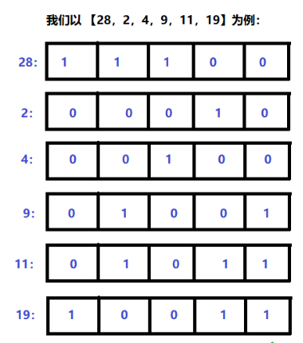

https://leetcode-cn.com/problems/total-hamming-distance/
两个整数的 汉明距离 指的是这两个数字的二进制数对应位不同的数量。
计算一个数组中，任意两个数之间汉明距离的总和。
示例:
输入: 4, 14, 2
输出: 6
解释: 在二进制表示中，4表示为0100，14表示为1110，2表示为0010。（这样表示是为了体现后四位之间关系）
所以答案为：
HammingDistance(4, 14) + HammingDistance(4, 2) + HammingDistance(14, 2) = 2 + 2 + 2 = 6.
注意:
- 数组中元素的范围为从 0到 10^9。
- 数组的长度不超过 10^4。
暴力解法
1 | class Solution { |
简单的如上，根据 461-汉明距离 暴力求解，当然。。。会超时。也就是说是有捷径可走的。
优化解法
思路
其实这个思想的转变真的不太好想。一般的我们的正常的想法必然是像上面的暴力解法一样，依次计算数组中两两的汉明距离，再加起来，这更符合一个常人的思维。
思维怎么转呢？？以示例中的数字为例：
输入: 4, 14, 2
4 -> 0100
14 -> 1110
2 -> 0010
汉明组合为 4->14, 4->2, 14->2
4 -> 14 ===> 0100
1110
===> 1010 => 2
----------------------
4 -> 2 ===> 0100
0010
===> 0110 => 2
----------------------
14 -> 2 ===> 1110
0010
1100 => 2
所以，这是怎么就变成了求这些数的二进制表示中，各个数可能为1的组合的数之和的？？？ 完全没法往这方面想~只能把它当成一个结论吧，简单看一下
4 -> 0100
14 -> 1110
2 -> 0010
从上面可以知道，他们两两求汉明距离的结果分别如下：
1010
0110
1100
而求的也就是上面这些数中，二进制里 1 的数量，它们之间的互不影响的。
假如把它们看成是一个矩阵，之前是横向来思考，就是现在切换成纵向思考，
对于每个两两异或的结果来说，直接把按列的 1 的个数加起来就是全部异或的汉明距离之和。
总之，就是可以转换成求数组中每个数的二进制表示中，第一位可能数 1 的次数，累加起来即可。

比如对上面这个，看最后一列二进制表示，最后一列可能为1的组合怎么算？
比如 9、11、19 的最后一位是1，那它们与其它的任何最后一位不是1有数异或，最后一位都是1。
记数组总数为 n，二进制最后一位是 1 的元素个数为 c，则最后一位非 1 的元素个数为 n - c。1 和 非1 的元素组合个数为 c * (n - c)。比如 9，它和 28、2、4 的异或结果的最后一位都是 1，就有 3 个，11 也是，因此有 c * (n - c) 这么多个。然后再依次往左位移，计算出每一位可能为 1 的数量。代码如下：
1 | class Solution { |
1 | class Solution { |